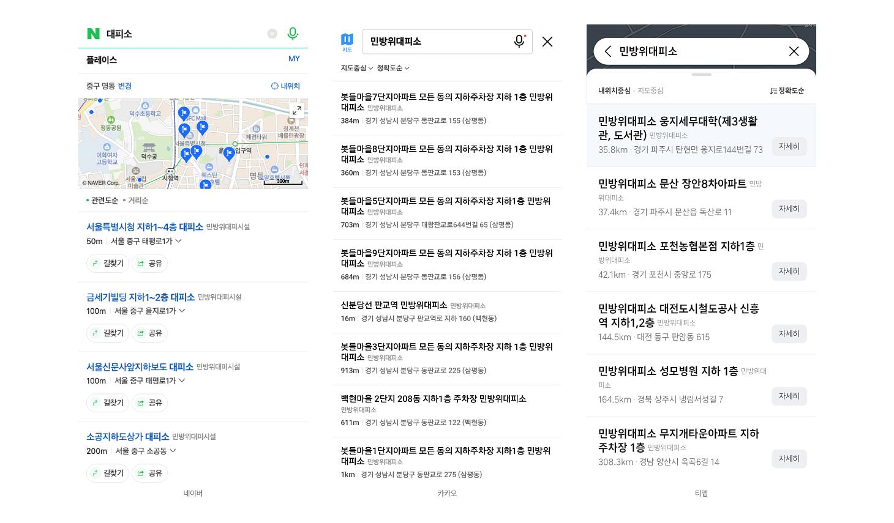
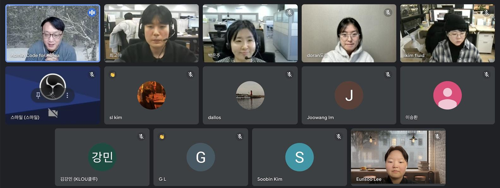

원문 출처: https://codefor.kr/posts/0ktMD90
2025년 2월 21일, Code for Korea가 주최한 온라인 미니밋이 성황리에 진행되었습니다.
이번 행사는 행정안전부의 재난안전데이터 공유 플랫폼을 주제로, 데이터 개방과 활용 방안을 논의하는 자리였습니다.
Code for Korea는 지난 코로나19 시기 공적 마스크 앱 개발 등의 프로젝트를 수행한 이후로도 안심이 프로젝트를 통해 재난안전공공데이터 현황을 점검(24.6월 밋앤핵)하고, 재난 상황에서 고려해야 할 다양한 사용자 유형을 분류하는 작업을 진행(24.9월 밋앤핵)하는 등 재난안전데이터에 대한 꾸준한 관심을 가지고 있습니다. 행정안전부의 재난안전데이터 공유 플랫폼 개편은 시민 주도의 재난안전데이터 활용에 새로운 가능성을 확장하는 반가운 소식이었지요.
이번 온라인 미니밋에서는 특별히 행정안전부 재난안전데이터과의 담당자분들을 직접 모시고 플랫폼을을 소개 받고, 플랫폼을 개편하며 느낀 고민과 앞으로의 기대에 대해 다양한 배경을 가진 시민들이 참여해 활발한 의견을 나누었습니다. 먼저 코드포코리아에서 행동강령, 공적 마스크와 안심이 프로젝트 등 관련 프로젝트를 소개하였고, 담당자분이 재난안전데이터공유플랫폼을 소개하는 발표를 약 20분간 진행했습니다.
재난안전데이터 공유 플랫폼 소개

재난안전데이터 공유 플랫폼 홈페이지 https://www.safetydata.go.kr 대문
행정안전부는 2022년부터 3개년에 걸친 노력 끝에 57종의 재난 유형과 1,800여 개의 데이터를 수집하여 한 곳에서 제공하는 재난안전데이터 공유 플랫폼을 구축하여 올해 초 본격적으로 개방하였습니다. 해당 플랫폼은 정형 데이터, 비정형 데이터, 공간 데이터를 모두 연결할 수 있도록 설계되었으며, 데이터 수집부터 유통까지 체계적인 프로세스를 갖추고 있습니다. 이를 통해 강릉 산불 대응, 대피소 정보 통합 제공 등의 성과를 거두었고, 앞으로도 지속적인 확장이 계획되고 있습니다. 현재 도시폭염 관리체계, IoT 센싱 정보 활용, 지하시설물 매설 정보 제공 등 다양한 활용 사례가 개발되고 있습니다.
행정안전부는 기업과 학회를 비롯한 민간 활용을 적극 지원하고 있으며, 재난안전데이터 활용 공모전을 확대하는 등 사용자 참여를 장려하고 있습니다.
“재난안전데이터 활용 우수 기업이 있으면 저희가 추천해서 맞춤형 컨설팅이나 무료 부스를 제공하는 등 지원을 하고 있습니다.”
하지만 데이터 품질 관리에 있어 여러 가지 어려움이 있었는데요, 특히 원천 시스템과의 직접 연결 부족, 담당자 변경 등의 문제가 발생하면서 데이터 품질 유지가 어려운 상황이었습니다. 이에 따라, 앞으로 공모전 개최 등 시민 참여를 확대하는 방안이 논의되었으며, AI 기반 품질 관리 인프라 지원도 검토 중이라고 공유되었습니다.
Q&A
담당자의 발표 이후에는 약 20분간 미니밋에 모인 시민들과의 질의응답이 이어졌습니다.
먼저 현재 플랫폼이 보유한 데이터의 품질을 개발자들의 요구를 충족시키기 위해 개선하는 방안에 대한 논의가 이어졌습니다. 특히 대피소 데이터의 신뢰성과 실제 활용 가능성을 높이는 것이 중요하다는 의견이 나왔습니다. 예를 들어, 인천시에서는 최근 장애포괄적 기후위기·재난 대응 시스템을 구축하기 위해 대피소의 접근성과 편의시설을 장애인 당사자들과 모니터링하는 활동을 진행했는데요, 그 결과 인천시 내 대피소 136곳 가운데 경사로 설치율 43%, 장애인화장실이 없는 곳이 56% 등 개선 필요한 내용들이 확인되었습니다. 만약 이런 상황이 데이터화되고 서비스에 적용된다면 어떤 대피소가 나에게 가장 적합한 곳인지, 가까운 대피소에 무엇을 요구해야 하는지 좀 더 명확하게 알 수 있겠지요?

다음으로 데이터 활용을 위한 파일 형태 최적화와 다운로드 편의성에 대한 문제가 논의되었습니다. 현재 플랫폼은 다양한 API를 제공하고 있지만, 연구자들은 데이터를 파일로 다운로드 받기를 원하고 있습니다. 또 다른 예시로 안전관리 일일상황 보고서는 매일 06시에 업데이트되지만, 한글(HWP) 파일 형태로만 제공되어 접근성이 떨어진다는 의견이 나왔습니다. 이에 대한 답변으로 인프라 문제로 인해 현재 파일 다운로드 기능을 제공하기 어려운 상태이지만, 향후 지원 가능성을 검토하고 있으며, 행정 담당자들 역시 파일 형태의 데이터 제공을 요청하고 있어, 이 부분에 대한 논의가 지속적으로 이루어질 예정으로 답변되었습니다.
마지막으로 긴급 재난 발생 시 데이터 전문가들의 역할과 대응 체계에 대한 논의도 이루어졌습니다. 이에 대한 예시로 IoT 센싱 정보, 지하 광케이블 및 가스 배관 매설 정보 등 새로운 데이터 연계 계획이 소개되었습니다. 또한, 산불 피해 방지를 위한 데이터 API를 통해 지도 형태로 표출하기 위한 추가 개발 필요성 등 추가적인 서비스 계획도 언급되었습니다. 앞으로 시민들과 민간 영역에서 데이터를 활용해 다양한 서비스를 개발할 수 있도록 지원하는 방안이 필요하다는 점이 강조되었습니다.

마무리: 앞으로의 기대
이번 Code for Korea 온라인 미니밋은 재난안전데이터 공유 플랫폼의 현황과 개선 방안을 논의하는 유익한 자리였습니다. 데이터 개방과 품질 개선, 사용자 참여 확대 등 다양한 논의가 이루어졌으며, 앞으로의 발전 가능성에 대한 기대와 아이디어도 공유되었습니다.
Code for Korea는 앞으로도 공공 데이터를 활용한 다양한 사회적 문제 해결을 위해 시민들과 협력해 나갈 계획입니다. 이번 세미나에서 나온 의견들이 실질적인 정책 개선으로 이어지길 기대하며, 데이터 기반 재난안전 관리에 대한 지속적인 관심과 논의가 필요합니다.
관심 있는 분들은 코드포코리아 디스코드 #안심이 채널에서 더 많은 이야기와 아이디어를 나눌 수 있습니다!
그럼 다음 행사에서 만나요! 👋